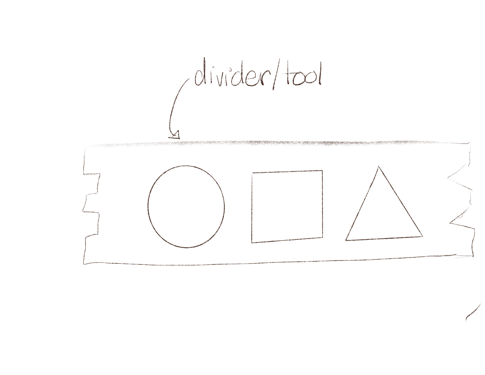

For my final project, I want to make a sensory box appropriate for a child between the ages of 3 and 5 to practice play with manipulative toys and improve fine motor skills.

I decided to create a box that could accommodate mini playdough containters, cookie-cutter style manupulatives, and a removeable divider that acts as an additional tool for play. The box will close with a lid that can slide on for a secure fit and can also act as a tray for the child to play with the playdough on. In order to make the cookie-cutter manipulatives I will follow a tutorial and create unique shapes with Grasshopper.
Techniques I will use include: Modeling in Rhino, Parametric Modeling with Grasshopper, Slicing with Cura, 3D Printing.
1. Modeling the Box, Lid, & Divider in Rhino: Using Rhino, I will model the three parts of the box: the main body, the top, and the divider that also functions as a manipulative tool for fine motor skills development.
2. 3D Printing the Box, Lid, & Divider: Once the parts are modeled, I will do a small test print to check the fit of the lid and then I will print the full scale version.
3. Modeling the Cookie Cutters with Grasshopper: While I am modeling the Box, Lid, & Divider I will utilize Grasshopper to additionally model an organizer for the casted objects. This organizer will fit into the storage box.
4. Making Adjustments to the 3D Printed Parts: Based on the test print and how things fit, make adjustments to the box, lid, and divider.
5. Printing the Final Box & Cookie Cutters: Once I have tested the fit and made adjustments to parts in Rhino and Grasshopper, I will do the final 3D prints.
6. Finishing Touches: To make it a little more festive, I will add non-toxic, kid safe gold paint to the top of the lid around the letters.
7. Assembly and Documentation: Finally I will assemble the final product and document my experience.
Tuesday 11/22/22: Measure playdough containters. Finish modeling parts of the box and print a test model to check fit of stock materials and divider/lid. Begin Grasshopper modeling of cookie-cutters.
Wednesday 11/23/22: Make necessary adjustments and begin printing the final box
Thursday 11/24/22: Print the cookie cutters.
Friday 11/25/22: Assemble the box with all of the parts and check the fit - make adjustments and reprints as necessary.
Sunday 11/27/22:Paint and finish the lid of the box
Monday 11/28/22: Finish documentation.
Tuesday 12/6/22: Project Presentation.
- Ender 3 Pro, owned.
- White Filament for 3D printed box, lid, divder & cookie-cutter manipulatives, owned.
- Gold Paint, owned.
- Mini playdough, arrived 11/22/22.
Shout Outs: Nichelle for her support.